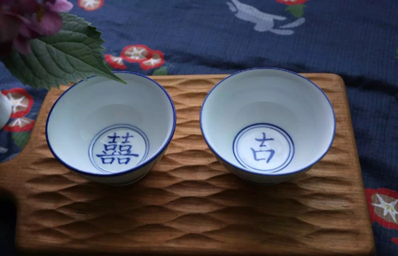
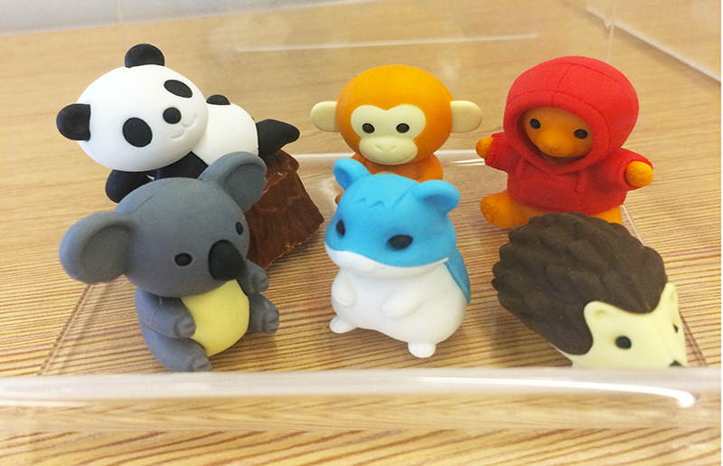
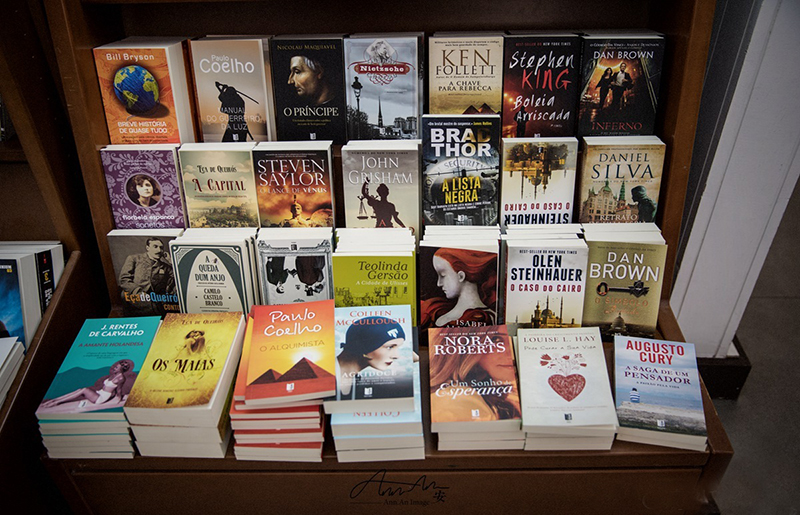

生活本如味精沏泡的茶葉，乾癟單薄；只有傾注如沸水般滾燙的熱情，才能讓它飽滿豐盈，清香四溢。
茶對水的思念，是苦澀綿長的，在不可預知的日子裡它堅守著一個信念；茶入水的歲月是熱烈激昂的，在滾燙似火的接觸中，它呼喊著高亢的號子；茶沉底的光陰，則是平凡無奇的，在日復一日的生活中，它品味著人生從容的寧靜。
茶對水的思念，是苦澀綿長的，在不可預知的日子裡它堅守著一個信念；茶入水的歲月是熱烈激昂的，在滾燙似火的接觸中，它呼喊著高亢的號子；茶沉底的光陰，則是平凡無奇的，在日復一日的生活中，它品味著人生從容的寧靜。

橡皮
小小一塊橡皮，
性格溫柔堅定，
為了捍衛真理，
粉身碎骨也行，
只要錯誤改正，
寧願捨棄生命。

有時候，書是一盞錚亮的燈，照亮我心中的黑暗，讓我明白了世間的善惡美醜；有時候，書是一對潔白的翅膀，帶我飛到雲海深處，一覽山河的壯麗美景；有時候，書是一葉堅固的小舟，帶我駛向成功的彼岸，任憑風吹浪打也不回頭。